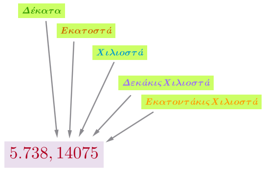
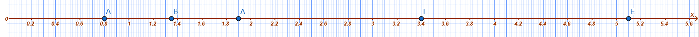
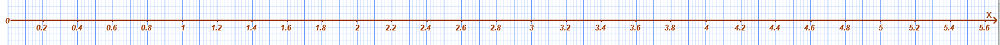

1 Δεκαδικά κλάσματα - Δεκαδικοί αριθμοί - Διάταξη δεκαδικών αριθμών - Στρογγυλοποίηση
1.1 Μετατροπή Δεκαδικού Κλάσματος σε Δεκαδικό Αριθμό και Αντιστρόφως
Θεωρία - Ορισμοί - Ιδιότητες
- Δεκαδικό κλάσμα ονομάζεται το κλάσμα που έχει ως παρονομαστή μια δύναμη του 10 (10, 100, 1.000 κ.λπ.).
\[\frac{3}{10}, \frac{14}{100}, \frac{5}{1000}, \frac{567}{10.000}, \cdots\]
- Για να μετατρέψουμε ένα δεκαδικό κλάσμα σε δεκαδικό αριθμό, γράφουμε τον αριθμητή και χωρίζουμε με υποδιαστολή από τα δεξιά προς τα αριστερά τόσα ψηφία όσα είναι τα μηδενικά του παρονομαστή.
\[\frac{8}{100}=0,08\ \ \ \ \ ,\frac{56}{10}=5,6\ \ \ \ \ , \frac{72}{1000}=0,072 \ \ \ \ \cdots \]
- Για να μετατρέψουμε έναν δεκαδικό αριθμό σε δεκαδικό κλάσμα, θέτουμε ως αριθμητή τον αριθμό χωρίς την υποδιαστολή και ως παρονομαστή τη μονάδα με τόσα μηδενικά όσα ήταν τα δεκαδικά ψηφία του αριθμού.
Παραδείγματα
- \(\dfrac{3}{10} = 0,3\)
- \(\dfrac{825}{100} = 8,25\)
- \(\dfrac{18}{1000} = 0,018\)
- \(2,35 = \dfrac{235}{100}\)
- \(0,007 = \dfrac{7}{1000}\)
- \(\dfrac{5}{10} = 0,5\).
- \(\dfrac{12}{100} = 0,12\).
- \(\dfrac{345}{1.000} = 0,345\).
- \(\dfrac{7}{100} = 0,07\).
- \(\dfrac{314}{100} = 3,14\).
- \(0,348 = \dfrac{348}{1.000}\).
- \(2,35 = \dfrac{235}{100}\).
- \(\dfrac{10}{8} = 10 : 8 = 1,25 = \dfrac{125}{100}\).
Ασκήσεις
Μετατρέψτε σε δεκαδικούς αριθμούς:
- \(\dfrac{58}{10}\),
- \(\dfrac{3}{100}\),
- \(\dfrac{5025}{100}\),
- \(\dfrac{1024}{1000}\),
- \(\dfrac{24}{10}\),
- \(\dfrac{142}{1000}\),
- \(\dfrac{2}{100}\),
- \(\dfrac{2007}{10000}\),
- \(\dfrac{5}{10^5}\).
Μετατρέψτε σε δεκαδικά κλάσματα:
\(3,5\),
\(45,25\),
\(3,004\),
\(102,4\),
\(77,28\),
\(0,027\).
Μετάτρεψε το \(\dfrac{58}{10}\) σε δεκαδικό.
Μετάτρεψε το \(\dfrac{3}{100}\) σε δεκαδικό.
Μετάτρεψε το \(\dfrac{1.024}{1.000}\) σε δεκαδικό.
Γράψε το \(3,5\) ως δεκαδικό κλάσμα.
Γράψε το \(0,004\) ως δεκαδικό κλάσμα.
1.2 Οι Δεκαδικοί Αριθμοί ως Αποτέλεσμα Μετρήσεων
Θεωρία - Ορισμοί - Ιδιότητες
Σε πολλές μετρήσεις οι φυσικοί αριθμοί δεν επαρκούν για να εκφράσουν το αποτέλεσμα με ακρίβεια, γι’ αυτό χρησιμοποιούμε τους δεκαδικούς.
Τα μεγέθη (μήκος, βάρος, χρόνος) μετρούνται με μονάδες που έχουν υποδιαιρέσεις βασισμένες στο δεκαδικό σύστημα (π.χ. \(1 cm = 0,01 m\)).
Παραδείγματα
- Μήκος \(1,68 m\) σημαίνει \(1\) μέτρο και \(68\) εκατοστά.
- \(50 cm = 0,5 m\).
- \(1 dm = 0,1 m\).
- \(1 mm = 0,001 m\).
- Βάρος \(1.020 kg\) μπορεί να εκφραστεί ως \(1,02\) τόνοι.
Ασκήσεις
Μετατρέψτε σε μέτρα (m):
- \(27 km\),
- \(59 hm\),
- \(2704 hm\),
- \(4763 dam\),
- \(80 dm\),
- \(1300 dm\),
- \(5000 dm\).
Μετατρέψτε τις παρακάτω μονάδες:
- \(7 mm\) σε \(\mu\),
- \(6 cm\) σε \(\mu\),
- \(52 \mu\) σε \(A\),
- \(3 cm\) σε \(A\).
- Εκφράστε σε \(km\) την απόσταση \(54.702 m\).
- Εκφράστε σε \(km\) τα \(8.760 dam\).
- Πόσα \(ml\) είναι τα \(0,25 lt\);
- Πόσα \(dm\) είναι τα \(50 cm\);
1.3 Η Αξία των Ψηφίων ενός Δεκαδικού Αριθμού
Θεωρία - Ορισμοί - Ιδιότητες
- Κάθε δεκαδικός αποτελείται από το ακέραιο μέρος (αριστερά της υποδιαστολής) και το δεκαδικό μέρος (δεξιά της υποδιαστολής).

Οι θέσεις στο δεκαδικό μέρος είναι: δέκατα (1η), εκατοστά (2η), χιλιοστά (3η), δεκάκις χιλιοστά (4η) κ.λπ..
Κάθε ψηφίο έχει δεκαπλάσια αξία από το ψηφίο που βρίσκεται αμέσως δεξιά του.
Παραδείγματα
- Στο \(73,324\): \(7\) δεκάδες, \(3\) μονάδες, \(3\) δέκατα, \(2\) εκατοστά, \(4\) χιλιοστά.
- Στο \(25,3764\): Το \(7\) είναι εκατοστά.
- \(0,008\): Το \(8\) είναι χιλιοστά.
- \(6,75 = 6 + \dfrac{7}{10} + \dfrac{5}{100}\).
- \(2,74 = 2 + \dfrac{7}{10} + \dfrac{4}{100}\).
- Στον \(345,123\) το \(1\) είναι δέκατα, το \(2\) εκατοστά, το \(3\) χιλιοστά.
- \(1,3\) διαβάζεται: “ένα κόμμα τρία” ή “μία μονάδα και τρία δέκατα”.
- Στον \(5,8909\) το ψηφίο των χιλιοστών είναι το \(0\).
- Στον \(98,0005\) το ψηφίο των δεκάκις χιλιοστών είναι το \(5\).
- Ποια είναι η αξία του ψηφίου 7 στον αριθμό 4,75;
Λύση: Το 7 βρίσκεται στην πρώτη θέση δεξιά από την υποδιαστολή. Άρα: 7 δέκατα (0,7).
- Ποια είναι η αξία του ψηφίου 3 στον αριθμό 12,453;
Λύση: Το 3 βρίσκεται στην τρίτη θέση δεξιά από την υποδιαστολή. Επομένως: 3 χιλιοστά (0,003).
- Αναλύστε τον αριθμό 5,24 σε άθροισμα αξιών.
Λύση: Χωρίζουμε τις μονάδες, τα δέκατα και τα εκατοστά. Επομένως: 5 + 0,2 + 0,04.
- Ποιο ψηφίο δείχνει τα εκατοστά στον αριθμό 0,891;
Λύση: Τα εκατοστά είναι η δεύτερη θέση μετά την υποδιαστολή. Άρα: Το ψηφίο 9.
- Γράψτε με ψηφία τον αριθμό: “Μηδέν κόμμα πέντε χιλιοστά”.
Λύση: Χρειαζόμαστε το 5 στην τρίτη δεκαδική θέση. Άρα: 0,005.
Ασκήσεις
Βρείτε την τάξη του ψηφίου 8 στους αριθμούς:
- \(805\),
- \(580\),
- \(5.080\),
- \(80.500\),
- \(5.008.000\).
Προσδιορίστε τα ψηφία (δέκατα, εκατοστά κ.λπ.):
- \(5,8909\),
- \(98,0005\),
- \(456,8756\),
- \(0,1003\).
Γράψτε με ψηφία τους αριθμούς:
- \(3\) δεκάδες, \(7\) μονάδες, \(4\) δέκατα, \(6\) χιλιοστά.
- \(2\) μονάδες, \(3\) εκατοστά, \(9\) δεκάκις χιλιοστά.
- \(5\) δέκατα, \(6\) χιλιοστά, \(2\) εκατοντάκις χιλιοστά.
- \(27\) ακέραιος και \(3\) χιλιοστά.
- \(107\) ακέραιος και \(23\) εκατοντάκις χιλιοστά.
- \(7\) κόμμα \(204\) δεκάκις εκατομμυριοστά.
Λύστε
- Ποια η αξία του \(8\) στον αριθμό \(456,8756\);.
- Πώς λέγεται το τέταρτο δεκαδικό ψηφίο μετά την υποδιαστολή;.
- Συμπλήρωσε: \(175 cm = \dots dm\).
- Συμπλήρωσε: \(4,9 m = \dots cm\).
- Συμπλήρωσε: \(99,6 mm = \dots cm\).
- Πόσα δευτερόλεπτα έχει μία ώρα;.
- Πόσα \(kg\) είναι ο ένας τόνος (\(1 t\));.
- Πόσα \(m^2\) είναι το \(1\) στρέμμα;.
- Στον αριθμό \(0,1768\) ποιο ψηφίο είναι στα εκατοστά;.
- Γράψε ολογράφως τον αριθμό \(14,085\).
- Ποια είναι η αξία του ψηφίου 4 στον αριθμό 12,48;
- Στον αριθμό 6,732, ποιο ψηφίο βρίσκεται στη θέση των χιλιοστών;
- Ποια είναι η αξία του ψηφίου 9 στον αριθμό 0,09;
- Ανάλυσε τον αριθμό 8,15 σε άθροισμα (όπως η λυμένη άσκηση 7).
- Ποιο είναι μεγαλύτερο: το 0,5 ή το 0,05; Γιατί;
- Γράψε τον αριθμό που έχει 3 μονάδες και 8 εκατοστά.
- Ποια είναι η αξία του 0 στον αριθμό 4,02;
- Μετάτρεψε το κλάσμα $ σε δεκαδικό αριθμό.
- Ποια είναι η αξία του ψηφίου 2 στον αριθμό 25,3; (Προσοχή: είναι πριν την υποδιαστολή).
- Γράψε με λέξεις τον αριθμό 1,003.
1.4 Αντιστοίχιση Δεκαδικών με Σημεία της Ευθείας των Αριθμών
Θεωρία - Ορισμοί - Ιδιότητες
Για να τοποθετήσουμε δεκαδικούς στην ευθεία, χωρίζουμε το τμήμα μεταξύ των φυσικών αριθμών σε \(10\) ίσα μέρη (για δέκατα) ή \(100\) ίσα μέρη (για εκατοστά).
Οι δεκαδικοί αριθμοί διατάσσονται πάνω στην ευθεία από τα αριστερά προς τα δεξιά κατά σειρά μεγέθους.
Παραδείγματα
- Ο \(0,8\) βρίσκεται μεταξύ \(0\) και \(1\), στο 8ο υποδιαίρετο τμήμα (δέκατο).
- Ο \(1,35\) βρίσκεται μεταξύ \(1\) και \(2\), στο 35ο εκατοστό.
- Ο \(3,4\) βρίσκεται μεταξύ \(3\) και \(4\).
- Ο \(1,9\) βρίσκεται πολύ κοντά στο \(2\).
- Ο \(5,1\) βρίσκεται αμέσως μετά το \(5\).

Ασκήσεις
Τοποθετήστε στην ευθεία των αριθμών:
- \(3,4\),
- \(4,5\),
- \(2,3\),
- \(2,8\),
- \(4,7\),
- \(4,3\),
- \(2,5\),
- \(1,9\),
- \(5,1\).
- \(1,2\),
- \(2,10\),
- \(2,3\),
- \(1,40\),
- \(3,2\),
- \(0,9\).

1.5 Σύγκριση Δεκαδικών Αριθμών
Θεωρία - Ορισμοί - Ιδιότητες
Αν δύο δεκαδικοί έχουν διαφορετικό ακέραιο μέρος, μεγαλύτερος είναι αυτός με το μεγαλύτερο ακέραιο μέρος.
Αν έχουν το ίδιο ακέραιο μέρος, συγκρίνουμε τα δεκαδικά ψηφία ένα προς ένα από αριστερά προς τα δεξιά μέχρι να βρούμε το πρώτο που διαφέρει.
Τα μηδενικά στο τέλος ενός δεκαδικού δεν αλλάζουν την αξία του (\(7,534 = 7,5340\)).
Ευθεία: Το τμήμα μεταξύ δύο φυσικών αριθμών (π.χ. \(0\) και \(1\)) χωρίζεται σε \(10\) ίσα μέρη για τα δέκατα ή \(100\) για τα εκατοστά.
Παραδείγματα
- \(8,97453 < 9,432\) (γιατί \(8 < 9\)).
- \(105,3842 > 105,37896\) (γιατί στα εκατοστά \(8 > 7\)).
- \(14,35 > 9,48\).
- \(32,12 < 32,21\).
- \(7,534 = 7,5340\).
- \(45,345 < 45,413\) (γιατί \(3 < 4\) στα δέκατα).
- \(980,19 > 899,01\) (λόγω ακέραιου μέρους).
- \(7,534 = 7,5340\).
- \(0,8\) στην ευθεία: χωρίζουμε το \(0-1\) σε \(10\) μέρη και παίρνουμε το 8ο.
- Διάταξη: \(1,9 < 2,3 < 2,5 < 2,8\).
- \(1,25 : 0,5 \Rightarrow\) Πολλαπλασιάζουμε με το \(100\) και τους δύο: \(125 : 50\).
- \(25,47\) είναι μεταξύ \(25,4\) και \(25,5\).
- Σύγκριση κλασμάτων: \(\dfrac{7}{10} > \dfrac{7}{15}\).
- Σύγκριση με μονάδα: \(\dfrac{12}{11} > 1\).
Ασκήσεις
Βάλτε το σύμβολο <, > ή = :
- \(45,345 \dots 45,413\),
- \(980,19 \dots 899,01\),
- \(7,534 \dots 7,5340\).
- \(45 \dots 45\),
- \(38 \dots 36\),
- \(456 \dots 465\),
- \(8.765 \dots 8.970\).
- \(90.876 \dots 86.945\),
- \(345 \dots 5.690\),
- \(1,050:3,100 \dots 2,593:4,650\).
Διατάξτε σε αύξουσα σειρά:
- \(1,01, 1,1, 11,01, 11,1, 1,001, 11,001\).
Διατάξτε σε φθίνουσα σειρά:
- \(9,99, 9,09, 9,90, 99,009\).
- \(34,952, 34,925, 34,592, 34,529, 34,295, 34,259\).
- \(4,420, 4,402, 4,240, 4,204\).
- \(50.500, 50.050, 50.005, 55.000\).
- Σύγκρινε: \(12,3 \dots 12,300\).
- Σύγκρινε: \(0,001 \dots 0,01\).
- Τοποθέτησε σε αύξουσα σειρά: \(3,4, 2,3, 2,8, 1,9\).
- Βάλε το σύμβολο \(>\) ή \(<\) : \(8,239 \dots 8,24\).
- Ποιος αριθμός είναι μεγαλύτερος: \(25,34\) ή \(25,339\);.
- Βάλε στη σειρά: \(0,5, 0,05, 0,55, 0,005\).
- Τοποθέτησε στην ευθεία τον \(1,35\).
- Βρες έναν δεκαδικό ανάμεσα στο \(2,5\) και \(2,6\).
- Σύγκρινε: \(\dfrac{5}{8} \dots 1\).
- Διάταξε φθίνουσα: \(34,952, 34,925, 34,592\).
1.6 Στρογγυλοποίηση Δεκαδικών Αριθμών
Θεωρία - Ορισμοί - Ιδιότητες
Επιλέγουμε την τάξη στρογγυλοποίησης και εξετάζουμε το ψηφίο της αμέσως μικρότερης τάξης (δεξιά).
Αν το ψηφίο είναι μικρότερο του 5 (\(0, 1, 2, 3, 4\)), το ψηφίο της τάξης παραμένει ίδιο και τα επόμενα μηδενίζονται ή παραλείπονται.
Αν το ψηφίο είναι 5 ή μεγαλύτερο (\(5, 6, 7, 8, 9\)), το ψηφίο της τάξης αυξάνεται κατά 1 και τα επόμενα μηδενίζονται ή παραλείπονται.
Δεν στρογγυλοποιούμε αριθμούς τηλεφώνων, ταυτοτήτων ή κωδικούς.
Παραδείγματα
- \(957,3842 \rightarrow 957,38\) (στο εκατοστό).
- \(11,255 \rightarrow 11,3\) (στο δέκατο).
- \(2,015 \rightarrow 2,02\) (στο εκατοστό).
- \(1.255 \text{ €} \rightarrow 1.300 \text{ €}\) (στην εκατοντάδα).
- \(4.344 m \rightarrow 4.300 m\) (στην εκατοντάδα).
- \(9,573,842\) στις εκατοντάδες \(\rightarrow 9.573.800\).
- \(9,573,842\) στα εκατομμύρια \(\rightarrow 10.000.000\).
- \(9876,008\) στο δέκατο \(\rightarrow 9876,0\).
- \(67,8956\) στο εκατοστό \(\rightarrow 67,90\).
- \(8,239\) στο εκατοστό \(\rightarrow 8,24\).
- \(23,7048\) στο χιλιοστό \(\rightarrow 23,705\).
- \(17,73\) στον πλησιέστερο ακέραιο \(\rightarrow 18\).
- \(40,14\) στον πλησιέστερο ακέραιο \(\rightarrow 40\).
- \(25,47\) στο δέκατο \(\rightarrow 25,5\).
- \(7,568,349\) στις δεκάδες χιλιάδες \(\rightarrow 7.570 .000\).
Ασκήσεις
Στρογγυλοποιήστε στο δέκατο, εκατοστό και χιλιοστό:
\(9876,008\),
\(67,8956\),
\(0,001\),
\(8,239\),
\(23,7048\).
\(13,5555\),
\(2,4242\),
\(3,1717\),
\(6,2549\). Στρογγυλοποιήστε στην πλησιέστερη μονάδα, δεκάδα, εκατοντάδα ή χιλιάδα:
\(11.134\),
\(21.254\),
\(58.398\),
\(97.951\),
\(48.265 kg\),
\(384.394 km\).
Στρογγυλοποίησε στο δέκατο: \(67,8956\).
Στρογγυλοποίησε στο εκατοστό: \(9876,008\).
Στρογγυλοποίησε στη μονάδα: \(23,24\).
Στρογγυλοποίησε στη μονάδα: \(10,11\).
Στρογγυλοποίησε στο χιλιοστό: \(0,0014\).
Στρογγυλοποίησε στο δέκατο: \(8,239\).
Στρογγυλοποίησε στο εκατοστό: \(23,7048\).
Στρογγυλοποίησε στις εκατοντάδες: \(34.564\).
Στρογγυλοποίησε στις χιλιάδες: \(7.568 .349\).
Στρογγυλοποίησε στον πλησιέστερο ακέραιο: \(99,099\).
1.7 Δεκαδικό Κλάσμα ως Πηλίκο και Ποσοστό
Θεωρία - Ορισμοί - Ιδιότητες
Κάθε κλάσμα \(\dfrac{\alpha}{\beta}\) ισοδυναμεί με τη διαίρεση \(\alpha : \beta\).
Το ποσοστό επί τοις εκατό (%) είναι ένα κλάσμα με παρονομαστή το \(100\).
\[\dfrac{5}{100}=5\% \ \ \ \ , \dfrac{85}{100}=85\% \ \ \ \ \ , \frac{0,6}{100}=0,6\% \]
- Για να μετατρέψουμε ένα κλάσμα σε ποσοστό, εκτελούμε τη διαίρεση και πολλαπλασιάζουμε το αποτέλεσμα με το 100.
Παραδείγματα
- \(\dfrac{20}{4} = 20 : 4 = 5\).
- \(\dfrac{3}{8} = 3 : 8 = 0,375\).
- \(\dfrac{4}{5} = 0,80 = 80\%\).
- \(12\% = \dfrac{12}{100} = \dfrac{3}{25}\).
- \(0,52 = 52\%\).
- \(\dfrac{4}{5} = \dfrac{4 \cdot 20}{5 \cdot 20} = \dfrac{80}{100} = 80\%\).
- \(\dfrac{3}{8} = 0,375 = 37,5\%\).
Ασκήσεις
Εκτελέστε τις διαιρέσεις και γράψτε το πηλίκο ως δεκαδικό:
- \(14:70\),
- \(26:4\),
- \(121:200\),
- \(72:90\),
- \(36:200\).
Μετατρέψτε τα κλάσματα σε ποσοστά %:
- \(\dfrac{1}{5}\),
- \(\dfrac{3}{2}\),
- \(\dfrac{1}{4}\),
- \(\dfrac{3}{4}\),
- \(\dfrac{3}{5}\).
Μετατρέψτε τους δεκαδικούς σε ποσοστά %:
- \(0,52\),
- \(3,41\),
- \(0,19\),
- \(0,03\),
- \(0,07\).
- Μετάτρεψε το \(\dfrac{1}{4}\) σε ποσοστό \(\%\).
- Μετάτρεψε το \(\frac{3}{2}\) σε ποσοστό \(\%\).
- Γράψε το \(15\%\) ως δεκαδικό κλάσμα και απλοποίησέ το.
- Βρες τη δεκαδική μορφή του \(\dfrac{20}{11}\) (περιοδικός).
- Γράψε το \(73\%\) ως κλάσμα.